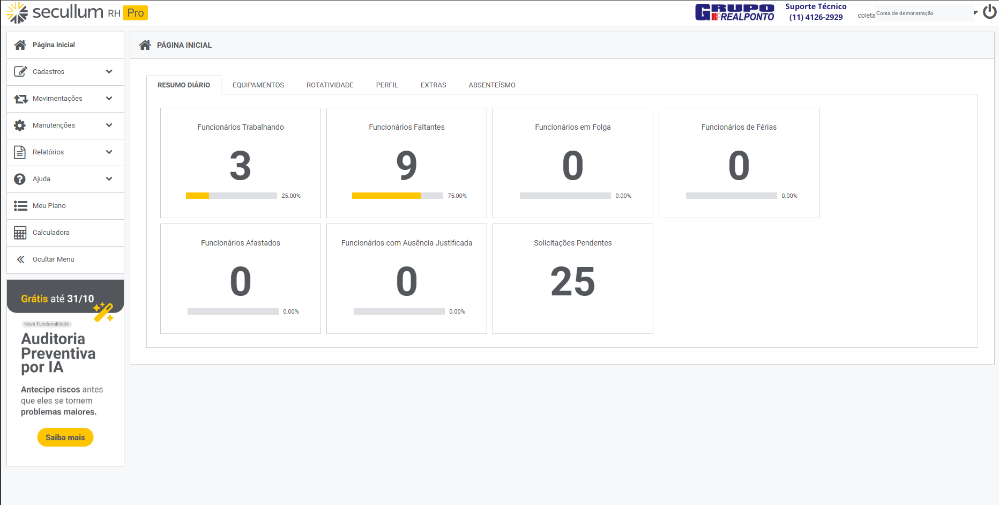

Cadastros organizados
Identificação, empresa, horário, função e departamento reunidos no cadastro do funcionário.
Ver funcionários →

Conheça o Secullum RH. evolução do conhecido Secullum Ponto Web, é uma plataforma completa em nuvem que transforma a rotina do RH, reunindo controle de ponto, gestão de jornada e informações dos colaboradores em um único ambiente.
Escolha uma tela ou siga o tour guiado. As explicações aparecem sobre a imagem, próximas da região destacada.
Conheça os indicadores e as solicitações do resumo diário.

Não foi possível abrir esta captura. Confira sua conexão e tente novamente.
Entenda onde ficam os cadastros, as configurações de horário e as consultas apresentadas na demonstração.
Identificação, empresa, horário, função e departamento reunidos no cadastro do funcionário.
Ver funcionários →Conheça a grade semanal e a área de opções avançadas disponível na tela de horário.
Ver horários →Consulte as marcações da equipe por dia ou acompanhe os cálculos de um funcionário no período.
Ver cálculos →Converse sobre a configuração, a orientação de uso e o suporte previstos para sua contratação. Nossa equipe ajuda a avaliar a solução para a sua necessidade.
Conheça o suporte RealPonto →Quantidade de colaboradores, locais de trabalho e equipamentos utilizados.
Defina com a equipe as configurações e orientações necessárias.
Um sistema otimizado para o dia a dia do departamento de recursos humanos.
Fale com a RealPonto sobre o Secullum RH e tire suas dúvidas antes de contratar.
Demonstração visual do Secullum RH preparada para o site da RealPonto. As capturas apresentadas são da versão Pro.